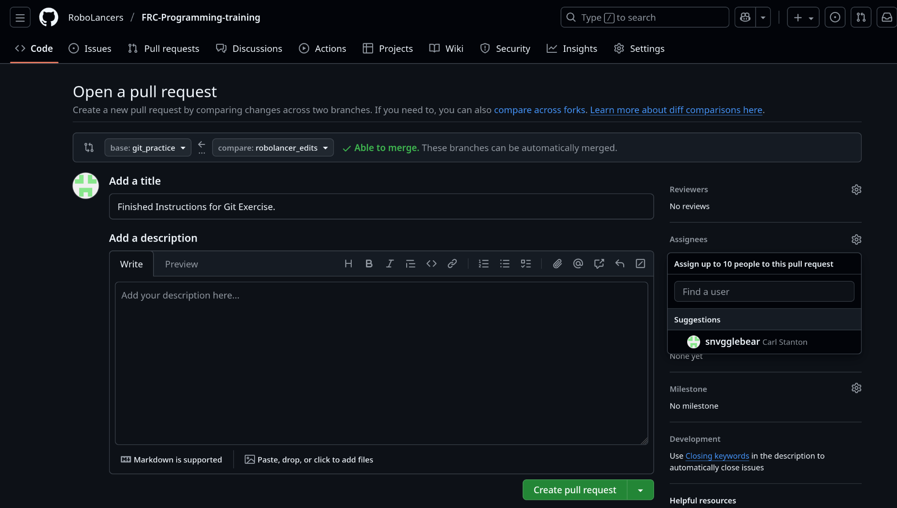

Using GitHub#
GitHub is the platform where your team's code lives in the cloud. Before going further, it helps to understand the difference between two things people often conflate:
Git vs. GitHub
Git is the version control tool that runs on your computer. It tracks changes, creates commits, and manages branches — all locally, with no internet connection needed. The core Git commands (add, commit, push, pull, branch) are covered in Basic Git.
GitHub is a cloud platform built on top of Git. It hosts your repository so teammates can access it, and adds collaboration features that don't exist in Git itself: pull requests, code review, issues, project boards, and organization management.
Everything on this page is a GitHub feature. When a section requires a Git command (like git clone or git fetch), it is labeled as such.
Start with the GitHub Classroom assignment
Before reading further, accept the GitHub Classroom assignment, read the information in it, and complete the optional steps. It introduces the core concepts — repositories, branches, pull requests, and issues — that this page builds on.
Prerequisite
This page assumes you are comfortable with the core Git commands covered in Basic Git. If those feel unfamiliar, start there first.
Creating a GitHub Account#
If you do not already have a GitHub account, you will need one before you can push code or collaborate with your team.
- Go to github.com/signup and create a free account.
- Choose a username that is professional — your team leads and potential employers may see it.
- Enable two-factor authentication (2FA). GitHub requires 2FA before you can push code. Follow the GitHub 2FA setup guide to set it up with an authenticator app.
Warning
Do not skip 2FA. GitHub will block your pushes until it is enabled. Set it up right after you create your account.
Once your account is ready, ask your team lead or mentor to add you to your team's GitHub organization so you can access the robot code repositories.
GitHub Organizations#
Your team's code should live under a GitHub Organization, not under any one person's personal account. An organization is a shared workspace on GitHub where your team can:
- Own repositories that belong to the team, not any single person
- Add and remove members without losing access to repos
- Set different permission levels for different roles
- Keep all repos in one place across seasons
Ask a mentor or coach to create the organization (e.g., github.com/RoboLancers) if your team does not already have one, then ask them to add your account to it.
Repository permissions#
GitHub has several permission levels. Here is how most FRC teams set them up:
| Role | Typical Members | What They Can Do |
|---|---|---|
| Owner | Mentors / Coaches | Full admin control |
| Maintainer / Lead | Software leads | Merge PRs, manage branches, edit settings |
| Write | Active programmers | Push branches, open PRs |
| Read | Other team members | View and clone code |
As a student programmer, you will usually have Write access — enough to push your branches and open PRs, but not enough to accidentally break protected branches.
Repositories#
A repository (repo) is a project folder tracked by Git and hosted on GitHub. For FRC work, your team typically has one repo per robot season (e.g., 2026-Robot-Code).
Creating a repository on GitHub#
- Click the + icon in the top-right corner of GitHub and choose New repository.
- Give the repository a name (e.g.,
2026-Robot-Code). - Choose Private unless you want the code to be public.
- Check Add a README file to initialize the repo.
- In the Add .gitignore dropdown, you can choose a template — but for WPILib projects you will want to customize it yourself (covered in the
.gitignoresection below). - Click Create repository.
Tip
The repository should be owned by your team's GitHub Organization, not your personal account. That way, the code stays with the team even if you graduate.
Cloning a repository#
Cloning is a Git operation that downloads a repository to your computer and sets up the remote connection automatically. You clone once; after that, git push and git pull keep your local copy in sync.
- On the GitHub repository page, click the green Code button.
- Copy the HTTPS URL (e.g.,
https://github.com/RoboLancers/2026-Robot-Code.git). - Open a terminal and run:
Note
In VS Code, you can also use File → New Window, then click Clone Git Repository on the welcome screen and paste the URL directly.
Fork vs. Clone — what is the difference?#
| Clone | Fork | |
|---|---|---|
| What it does | Downloads a repo to your computer | Creates your own copy of a repo on GitHub |
| Where the copy lives | Your local machine | Your GitHub account (in the cloud) |
| Linked to the original? | Yes — origin points to the source repo |
Loosely — you can add the original as upstream |
| When to use it | Getting code from a repo you have access to | Contributing to a repo you do not own |
For FRC team work: you almost always want to clone the team's repository directly. Everyone clones the same repo and uses branches to work in parallel.
Forks are for open-source contributions. If you wanted to contribute to the WPILib project itself, you would fork it to your own GitHub account, make changes, and then open a pull request back to the original.
Tip
If you ever see instructions online that say "fork this repo," read carefully. For your team's robot code, you probably want to clone, not fork.
Pull Requests#
A pull request (PR) is a GitHub feature — it does not exist in Git itself. A PR is the official way to propose that your branch's changes be merged into another branch (usually main). It is also where code review happens.
PRs ensure that main always contains reviewed, working code. On FRC repositories, main is often protected so that only leads or mentors can click the merge button.
Opening a pull request#
- Make sure your branch is pushed to GitHub (
git push). If it is a new branch, Git will tell you to rungit push --set-upstream origin <branch-name>. - Go to the repository on GitHub. You will usually see a yellow banner saying your branch had recent pushes — click Compare & pull request. If the banner is gone, click the Pull requests tab and then New pull request.
- Set the base branch to
main(or whichever branch you are merging into) and the compare branch to your feature branch. - Write a clear title and description. Explain what changed and why. If the PR fixes an Issue, write
Closes #42(with the issue number) in the description. - Under Reviewers, request at least one teammate, lead, or mentor to review your code.
- Click Create pull request.
The review process#
Your reviewer will look at the Files changed tab to see exactly what lines you added or removed. They can leave comments on specific lines, ask questions, or request changes.
- If they approve the PR, you (or a lead) can merge it.
- If they request changes, address the feedback, push new commits to your branch, and the PR updates automatically.
Tip
Be a good reviewer yourself. When you review a teammate's PR, look for things like: off-by-one errors in sensor thresholds, motors spinning the wrong direction, missing null checks, and inconsistent naming. Leave encouraging comments too — good reviews build team trust.
Merging#
Once approved, click Merge pull request on GitHub. Choose Squash and merge if you want to combine all your commits into one clean commit on main. After merging, delete the feature branch — it has served its purpose.
Issues#
GitHub Issues are the team's task tracker — they live on GitHub, not in your local repository. Use them to record bugs, planned features, and questions.
Before you start coding a new feature, check whether there is already an open Issue for it. If there is not, create one.
A good issue includes: - A clear title (e.g., "Intake rollers spin backwards on deploy") - Steps to reproduce the problem (for bugs) or a description of the desired behavior (for features) - Any relevant context (match video, sensor readings, etc.)
Linking PRs to Issues#
Write Closes #42 in a PR description — GitHub will automatically close Issue #42 when the PR merges. This also works with Fixes #42 and Resolves #42.
GitHub Projects#
GitHub Projects is a Kanban-style board built into GitHub for tracking work across your team. Tasks are organized into status columns (e.g., To Do, In Progress, Done) and can be assigned to team members.
Key practices for FRC teams:
- If a task is explicitly tied to a PR, convert it to an Issue and link the PR. GitHub will automatically move it to Done when the PR merges.
- Add major milestones (competition dates, handoff day, feature deadlines) to the board as soon as they are set — it is easy to lose track of what needs to be done, who is doing it, and by when.
- Check what has been assigned to you regularly. If you are unsure what to work on next, ask a lead or mentor.
Tip
You can access your team's Project board from the Projects tab at the top of the repository or organization page.
Branch Management#
Branches are a Git concept — they let multiple people work in parallel without interfering with each other's code. GitHub adds visibility on top: you can see all branches, compare them, and open pull requests between them.
Branch naming#
Good branch names are short, lowercase, and descriptive. Most teams use a name/feature format:
Avoid generic names like my-branch or test — after a few weeks of build season there will be dozens of branches and nobody will know what is in them.
Branch strategies#
Personal branches — your workbench
For any new feature or bug fix, create a branch from main with your name and a short description. Work there, then open a pull request when you are ready.
Release branches (optional — mainly for competitions)
Created right before a major competition. Used for final testing and small bug fixes only — no new features. Think of it as the "loading the robot on the trailer" phase.
Hotfix branches — emergency repairs
For critical bugs discovered during a competition that need an immediate fix to main. Keep them small, get them reviewed fast, and merge them as quickly as possible.
Keeping your branch up to date#
If main has received new commits while you were working on your branch, pull those changes in before opening your PR. These are Git commands:
This reduces the chance of merge conflicts when your PR is reviewed.
Warning
If you and a teammate both edit the same lines of the same file, Git cannot automatically merge the changes — this is a merge conflict. VS Code highlights conflicts and gives you options to accept one side or combine both. Resolve conflicts carefully, then commit the result. When in doubt, ask a teammate.
Protecting main#
Branch protection is a GitHub setting that makes it impossible to push directly to main without a reviewed PR. To enable it (owners and maintainers only):
- Go to Settings → Branches.
- Click Add branch protection rule.
- Enter
mainas the branch name pattern. - Check Require a pull request before merging and set the required number of approvals to 1.
- Click Create.
Deleting stale branches#
After a branch is merged, delete it to keep the repo tidy.
# Git commands:
git branch -d branch-name # delete local copy (safe — blocked if unmerged)
git push origin --delete branch-name # delete the branch on GitHub
GitHub also offers a Delete branch button directly on a merged PR page, which handles the remote deletion for you.
.gitignore for WPILib Projects#
A .gitignore file tells Git which files and folders to exclude from version control. You do not want to commit auto-generated build output, local configuration, or binary files — they are large, change constantly, and can be regenerated from source.
When you create a new WPILib project, it generates a .gitignore automatically. A typical FRC .gitignore should exclude at least:
# WPILib build output
build/
.gradle/
# WPILib local configuration (machine-specific paths, deploy targets)
.wpilib/
# Gradle wrapper native binaries
gradle/
# VS Code local settings
.vscode/
# macOS filesystem metadata
.DS_Store
# Windows thumbnail cache
Thumbs.db
What should you commit?#
Commit everything that defines your robot's behavior:
- All
.javasource files undersrc/ build.gradleandsettings.gradlevendordeps/folder (contains JSON files for REV, CTRE, etc.).gitignoreitselfgradlewandgradlew.bat(so anyone can build without installing Gradle separately)
Warning
Do not commit the build/ directory. It contains compiled bytecode and native binaries that are regenerated every time you build. Committing it wastes space, causes unnecessary merge conflicts, and can hide real source changes in the diff noise.
Tip
If a file you want to ignore is already tracked by Git (because it was committed before you added it to .gitignore), un-track it first:
.gitignore will prevent the file from being tracked again.
Quick Reference: Common Workflows#
Starting work on a new feature#
git checkout main
git pull # get the latest code
git checkout -b your-name/feature # create your branch
# ... write code ...
git add .
git commit -m "Add feature X"
git push --set-upstream origin your-name/feature
# Open a pull request on GitHub
Picking up someone else's branch#
git fetch origin
git checkout their-name/feature # Git sets up tracking automatically
git pull # get the latest commits on that branch
Resolving a merge conflict in VS Code#
- Run
git merge origin/mainon your branch. - VS Code will highlight conflicted files in red in the Source Control panel.
- Open each conflicted file. You will see markers like
<<<<<<< HEADand>>>>>>> origin/mainaround the conflicting sections. - Use the inline buttons (Accept Current, Accept Incoming, Accept Both) or edit the file manually.
- After resolving all conflicts, stage the files with
git addand commit.
Exercises#
Exercise 1 — Simple commit#
- Clone this repository from GitHub.
- Create a branch from
mainnamed[your_name]_git_practice(e.g.,mar_liu_git_practice). - Add your name to the practice list at the bottom of GitWorkflow.md.
- Commit and push your changes.
Exercise 2 — Opening a pull request#
- After completing Exercise 1, go to the repository on GitHub.
- Open a pull request from your branch into the
git_practicebranch (notmain). - Set your team lead or mentor as a reviewer.

Tip
To select the base branch, use the base dropdown on the pull request creation page and choose git_practice instead of main.
Knowledge Check#
Quiz results are saved to your browser's local storage and will persist between sessions.
Your team's robot code should be stored in a GitHub repository owned by:
What is the difference between cloning and forking a repository?
Which of the following files should NOT be committed to your FRC robot repository?
You write Closes #42 in a pull request description. What happens when the PR is merged?
A file was accidentally committed before it was added to .gitignore. What command un-tracks it without deleting it from your computer?
When a reviewer clicks Request changes on your pull request, what should you do?
Quiz Progress
0 / 0 questions answered (0%)
0 correct
Summary#
| Concept | What to remember |
|---|---|
| Git | The version control tool — runs locally, no GitHub needed. |
| GitHub | The cloud platform — adds PRs, Issues, Projects, and org management. |
| Clone | Download a repo you have access to (git clone — a Git command). |
| Fork | Copy a repo you do not own, to contribute back via PR (GitHub feature). |
| Pull Request | GitHub's way to propose and review changes before merging into main. |
| Issues | GitHub's task tracker — link to PRs with Closes #N. |
| GitHub Projects | Kanban board for team-wide task tracking across Issues and PRs. |
| Branch protection | GitHub setting that prevents direct pushes to main. |
.gitignore |
Exclude build/, .wpilib/, .gradle/ from commits. |
For a refresher on Git commands themselves, see Basic Git.